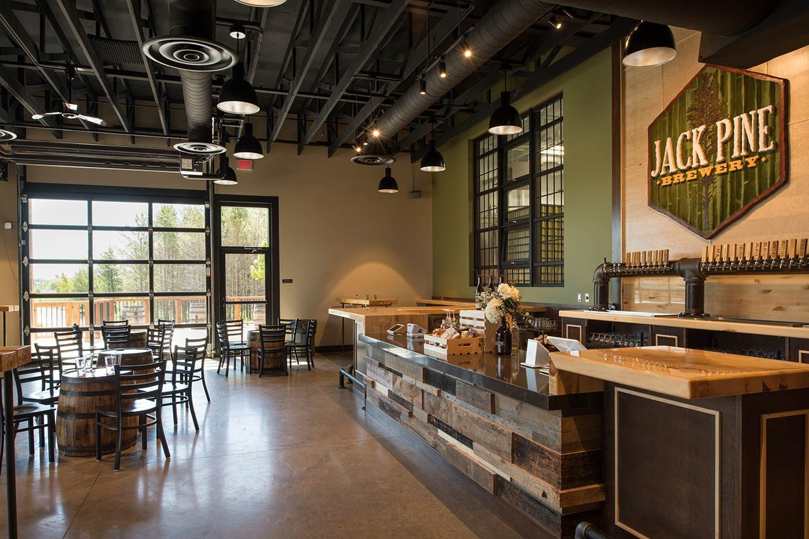
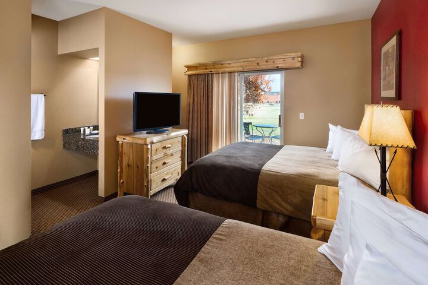
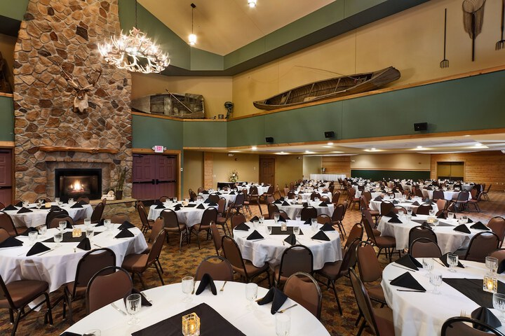
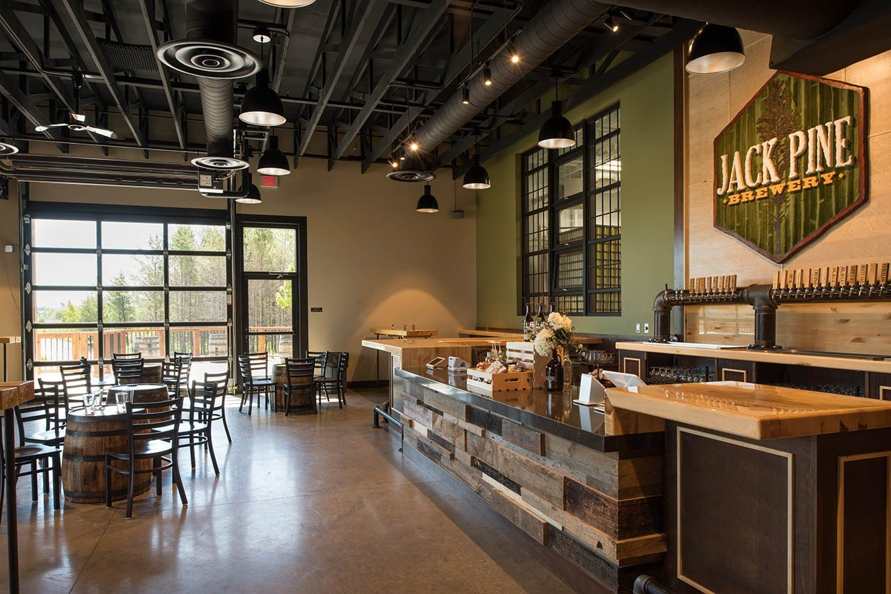
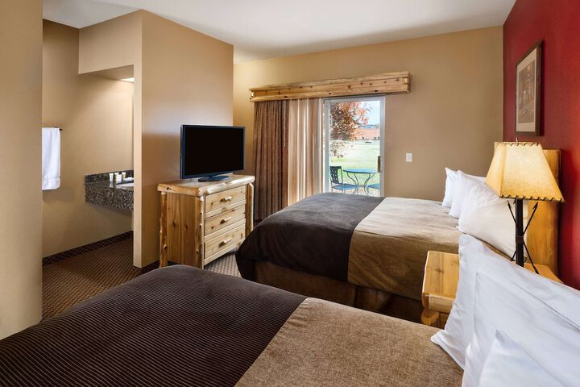
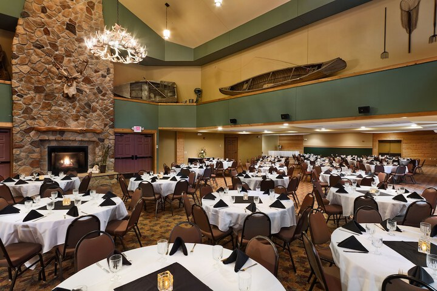

Spring Conference 2026
Dates
April 14-16, 2026 (Tuesday to Thursday). Plan for the conference to begin with check in on Tuesday afternoon about 4:00 p.m. We will end about noon on Thursday.
Location
The Lodge at Brainerd Lakes Resort
All reservations will be made through this registration page. You will not need to call the hotel. Their address is 6967 Forest Road, Baxter, Minnesota.
Conference worship will take place at Christ Lutheran in Baxter. Their address is 13815 Cherrywood Drive, Baxter Minnesota.
Theme
Engaging All of God's People in Ministry.
Speakers
Mike Thom - Engaging Seniors
Dennis Klatt - Engaging Women
Rob Guenther - Engaging Youth
Activities
This resort has a waterpark suitable for children. Bring the whole family!
Jack Pine Brewery is right next door. It is owned by a member of Christ Lutheran, Baxter. They will be open late for our Tuesday evening fellowship hour.
Download the information letter.
Scroll Down for the Registration Form
 




